| | News >
Bristol
News |
| .
| |
We
are in talks to offer compensation for quotes taken from the r/bristol
subreddit
| | |
Bristolive
is in discussions to potentially compensate the users of r/bristol for any
content used in exchange for allowing links directly to bristolive.co.uk
By
Avril
Dunce
04:20,
01
APR 2025
In a move that could mark a new
chapter in the often strained relationship between local media outlets
and online community forums, Bristolive
- the Bristol-based digital
news platform—has confirmed it is in discussions to offer
compensation to members
of the Reddit community r/bristol for the use
of content originating from the subreddit.
The talks
come amid growing concerns among Reddit users over the frequent
republishing of their posts, photos, and local updates on
Bristolive’s website, often without attribution or direct
benefit to the original contributors. The subreddit, which
serves as a
vibrant hub for local news, discussion, and community sharing, has seen
several of its most engaging posts featured on Bristolive, sometimes
repackaged into articles with little more than a passing reference to
their Reddit origins.
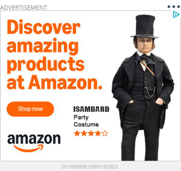
“It’s
about respect and recognition,” said one
r/bristol moderator, who asked to remain anonymous. “Many users contribute
valuable insights, breaking news, and local knowledge, and to see that
content monetized elsewhere without any benefit to the community feels
exploitative.”
In response to
mounting criticism and pressure from both Reddit moderators and the
wider Bristol community, Bristolive
has reportedly initiated informal talks with r/bristol moderators,
proposing a model where users whose content is used could receive modest compensation - possibly in
the form of vouchers, recognition programs, or small payments.
In return, Bristolive hopes to establish a more cooperative
relationship with the subreddit, including the lifting of bans on direct links
to bristolive.co.uk, which moderators had previously
restricted due to concerns over link spamming and low relevance content.
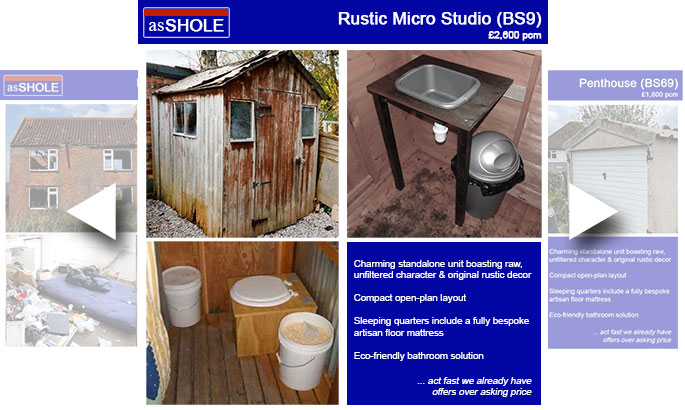
A New Model of Content Sharing?
The
proposal is still in its early stages, and details remain scarce, but
sources close to the discussions suggest Bristolive is considering a
contributor scheme, where Reddit users whose posts or comments are
featured in articles would be credited and optionally compensated. This
could include a monthly roundup of top community contributors,
exclusive Bristolive perks for Redditors, or a micro-payment system
tied to content performance.
A spokesperson for
Bristolive issued a brief statement confirming the discussions:
| “We
value the voices of Bristol’s online community and recognise
the
importance of r/bristol as a grassroots platform. Our goal is to find a
way to work collaboratively, ensure proper attribution, and offer
something meaningful in return when community content enhances our
journalism.” | |
| .... |
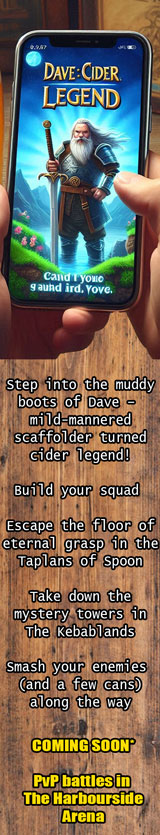 |
For
many users, however, compensation is only part of the issue. Transparency, proper attribution,
and consent remain core concerns. Several Redditors have
expressed skepticism about whether Bristolive’s intentions
are genuine or simply a response to mounting online criticism and
declining user trust. “It’s not
just about money,” said Reddit user
u/nailsandcider, a frequent contributor to local news threads. “We want to see proper
credit given and have some say in how our content is used.
We’re not a free content farm.”
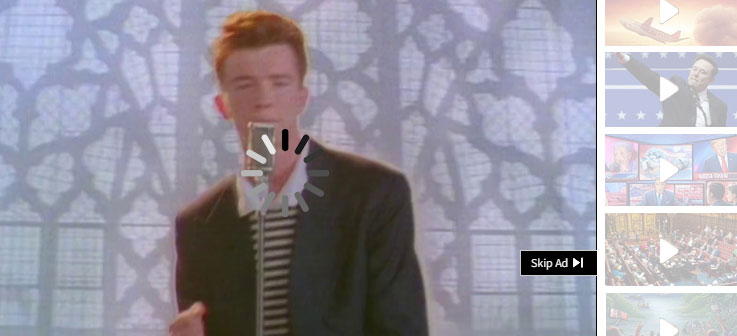
Moderators Cautiously
Optimistic
The
moderator team of r/bristol, which operates independently of any media
organisations, has not confirmed whether an agreement is close.
However, in a recent post pinned to the subreddit, moderators
acknowledged that discussions were ongoing and invited community
feedback on what fair compensation or recognition should look like.
“We are exploring ways
to ensure community content is treated respectfully and fairly if used
externally,” the post read. “Nothing has been
agreed yet, and we are putting the interests of users first in any
talks.”
Some suggestions from
the community have included donations
to local charities on behalf of contributors, free digital
subscriptions, or even a shared community content platform
jointly managed by Bristolive and Reddit moderators.
If
an agreement is reached, it could represent a pioneering model of collaboration
between traditional media and online communities,
especially in an era where user-generated
content increasingly drives traffic and engagement for news outlets.
Media
analyst Dr. Leigh Woodes from the University of the West of England
believes the move could set a precedent:
| “Local
media must adapt to the fact that communities now generate news in
real-time. Offering compensation and working cooperatively is a
progressive step—and one that could help rebuild trust with
digital audiences.” | |
For
now, r/bristol users remain watchful but intrigued. Whether
Bristolive’s olive branch will bloom into a meaningful
partnership or wilt under the weight of mistrust remains to be seen.
| | 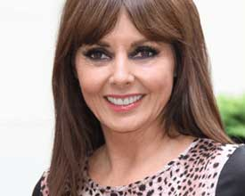 | | 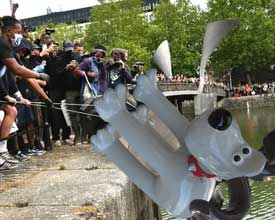
| Bristol Residents Taken To Reddit To Complain About Potholes
Tarmac | Sponsored | | You Won't Believe Carol Vorderman's New Look
Ark At Ee | | Outrage As Another Statue Thrown In Bristol Harbour
Not Another One | | | | | | | 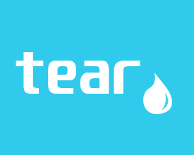 | | 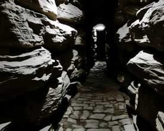 | | 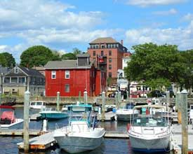 | Bristol Scooter Company Deal With Rival Revealed
Tear | Sponsored | | Secret Tunnels Discovered Under Turbo Island
TurboIsland.info | Sponsored | | Bristol (Rhode Island) Voted Top Holiday Destination
RI Tourist Board | Sponsored | | | | | | | | 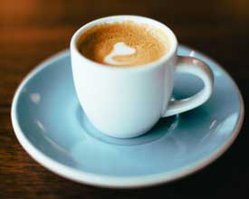 | | 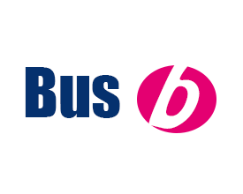 | Best Curry In Bristol As Surveyed By r/Bristol Weekly
Bristol Bingo | Sponsored | | Guess Which Coffee Shop Bristol Reddit Loves To Complain About
Gusts | Sponsored | | Bristol Bus Company Ordered By Trading Standards To Re-Brand
Bristolive |
|
|
If you
have got this far and
still not worked it out, this is an April Fools, but thanks for reading!
Disclaimer:
This
website is a parody and has been created solely for entertainment
purposes as part of an April Fools' Day 2025 joke. Any names,
organisations, or events referenced are entirely fictional, and any
similarities to real persons, companies, or publications—past
or present—are purely coincidental. This site is not
affiliated with, endorsed by, or representative of any actual news
outlet, organisation or any member of Reddit. | |
|